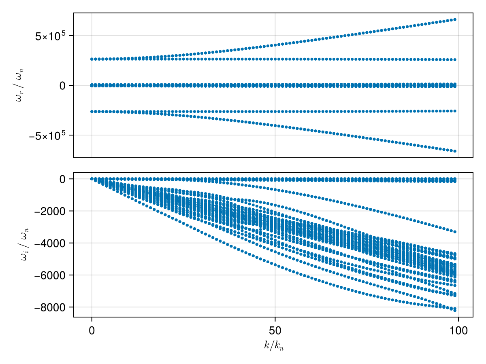
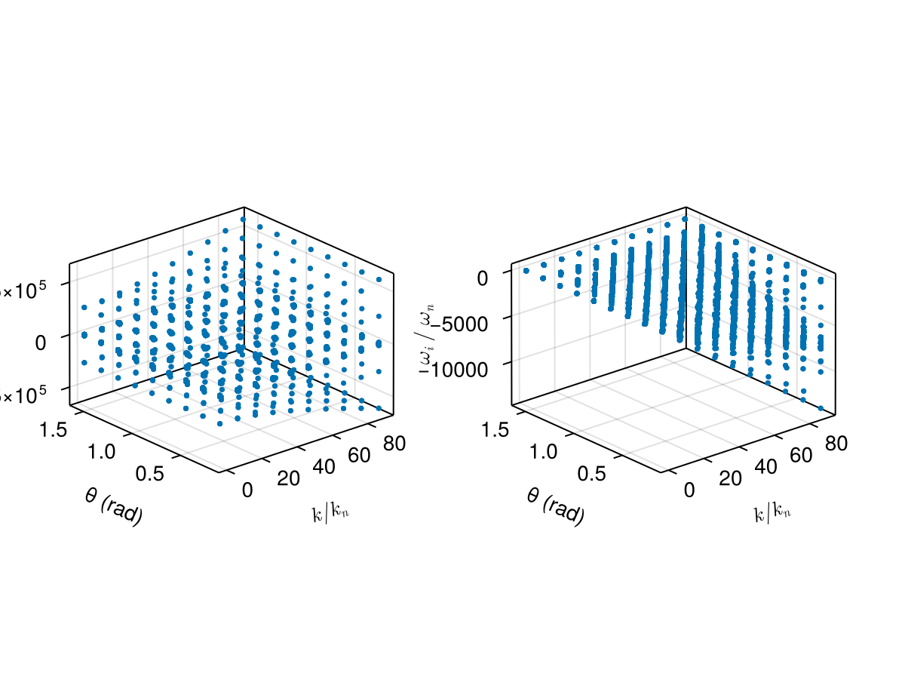

Case: Dispersion surface tracking (2D scan)
This page demonstrates how to construct a dispersion surface by scanning a 2D parameter space (wave number k and propagation angle θ) and using branch tracking to follow a consistent mode across the scan.
We consider a typical electron–proton plasma and scan:
kin normalized unitsk/k_n, wherek_n = ω_pi/cθfrom 5° to 90°
using PlasmaBO
using PlasmaBO: c0
B0 = 5e-9 # [Tesla]
n = 5.0e6
T = 12.94
ion = Maxwellian(:p, n, T)
electron = Maxwellian(:e, n, T)
species = (ion, electron)
wn = abs(B0 * ion.q / ion.m)
wpi = plasma_frequency(ion.q, n, ion.m)
kn = wpi / c0
wci = wn
# Kinetic solver settings (adjust upward for accuracy)
N = 33Dispersion Curve Scan
julia> using CairoMakiejulia> θ = deg2rad(45);julia> k_ranges = (0.01:1:100) .* kn;julia> results = solve(species, B0, k_ranges, θ; N)Solving dispersion (k, θ)... 17%|███▉ | ETA: 0:00:05 Solving dispersion (k, θ)... 57%|█████████████▏ | ETA: 0:00:02 Solving dispersion (k, θ)... 90%|████████████████████▊ | ETA: 0:00:00 Solving dispersion (k, θ)... 100%|███████████████████████| Time: 0:00:03 PlasmaBO.DispersionSolution{StepRangeLen{Float64, Base.TwicePrecision{Float64}, Base.TwicePrecision{Float64}, Int64}, Float64, Matrix{Vector{ComplexF64}}}(9.81977277497953e-8:9.819772774979531e-6:0.0009722557024507233, 0.7853981633974483, Vector{ComplexF64}[[-126621.46687532202 - 6.53280817471951e-12im, -126181.23357016404 + 9.609305006647867e-10im, -125742.53584747184 + 2.1816643935600325e-11im, -2638.5615125116205 - 0.24087074985161655im, -2638.561512511602 - 0.24087074985144122im, -2638.561512511598 - 0.24087074984942136im, -2638.4470794029876 - 0.2651185849412254im, -2638.4470794029726 - 0.2651185849404191im, -2638.447079402969 - 0.26511858494255186im, -2638.3543452262766 - 0.28028464658630264im … 2638.3543452262925 - 0.28028464658697694im, 2638.447079402978 - 0.265118584941481im, 2638.4470794029876 - 0.2651185849412532im, 2638.447079402994 - 0.26511858494362495im, 2638.561512511589 - 0.2408707498512052im, 2638.5615125116265 - 0.24087074985137413im, 2638.561512511627 - 0.24087074985019896im, 125742.5358474719 + 8.635184728233986e-12im, 126181.2335701641 - 8.371885764236622e-10im, 126621.46687532222 - 2.2499252805012102e-11im]; [-126647.93289248469 - 1.4410739268555517e-10im, -126198.78018484928 - 2.0071773065262222e-9im, -125768.49400451701 - 1.6011536541071791e-10im, -2671.711147848326 - 24.327945734953868im, -2671.7111478483066 - 24.327945734952277im, -2671.7111475953275 - 24.327946383219796im, -2660.153403875822 - 26.776977079149518im, -2660.1534038758164 - 26.776977079149788im, -2660.153393709819 - 26.776965185603288im, -2650.7873334603014 - 28.308737350695786im … 2650.787333460287 - 28.30873735069667im, 2660.1533937098093 - 26.77696518560366im, 2660.1534038758095 - 26.776977079149134im, 2660.153403875821 - 26.776977079149404im, 2671.711147595313 - 24.327946383221843im, 2671.711147848301 - 24.327945734952262im, 2671.711147848304 - 24.327945734952777im, 125768.49400451664 + 1.4326502740939003e-10im, 126198.78018484455 + 2.433645164666316e-9im, 126647.93289248414 + 1.5727558126534333e-10im]; … ; [-313940.64254257845 - 4.5666673789935435e-8im, -313861.5464174443 - 4.9761998508081965e-8im, -123618.23036716979 - 2.452446998398469e-5im, -5887.22577550712 - 2360.774219289854im, -5887.0566963867095 - 2360.953233955108im, -5774.271214584546 - 2344.2165983445im, -5223.7344911556675 - 2588.8106209916905im, -5109.5424513636735 - 2214.224837475187im, -5007.815770120979 - 2360.774219289844im, -5006.872705233711 - 2361.69577513094im … 5006.872705233708 - 2361.6957751309474im, 5007.815770121049 - 2360.774219289839im, 5109.542451363691 - 2214.224837475245im, 5223.734491155776 - 2588.8106209917496im, 5774.271214584536 - 2344.2165983444747im, 5887.056696386671 - 2360.9532339550997im, 5887.225775507087 - 2360.774219289853im, 123618.23036716973 - 2.4524728659516003e-5im, 313861.5464174449 - 4.983075996278785e-8im, 313940.6425425786 - 4.573360001813853e-8im]; [-316611.46917836735 - 3.794049970537171e-8im, -316532.8275260986 - 5.7658105428209284e-8im, -123505.5549590054 - 2.5915331871412182e-5im, -5920.3754108437915 - 2384.8612942749473im, -5920.198173900958 - 2385.0485721136392im, -5802.211344748039 - 2366.079352138631im, -5259.865772167324 - 2621.37528894757im, -5147.17183682397 - 2234.9495259728023im, -5040.965405457705 - 2384.8612942749446im, -5039.996688056831 - 2385.806051307272im … 5039.996688056854 - 2385.806051307275im, 5040.965405457729 - 2384.8612942749583im, 5147.171836824008 - 2234.9495259728783im, 5259.865772167447 - 2621.3752889476095im, 5802.211344747983 - 2366.0793521385876im, 5920.198173900918 - 2385.0485721136392im, 5920.375410843792 - 2384.86129427493im, 123505.55495900531 - 2.5914682206603328e-5im, 316532.8275260987 - 5.7563738664612174e-8im, 316611.4691783675 - 3.78591309413423e-8im];;])
plot(results, kn, wn)
using PlasmaBO: plot_branches
# k, ω pairs for initial branch points (see `BranchPoint` for more control over tracking)
initial_point = (50 * kn, -600 * wn *im)
branch = track(results, initial_point)
f, (ax1, ax2) = plot_branches((branch,), kn, wn)
ylims!(ax2, -3500,500)
f
Dispersion Surface Scan (2D)
julia> ks = (0.1:10:100.0) .* kn;julia> θs = deg2rad.(10.0:10.0:90.0);julia> res2d = solve(species, B0, ks, θs; N)Solving dispersion (k, θ)... 34%|███████▉ | ETA: 0:00:02 Solving dispersion (k, θ)... 72%|████████████████▋ | ETA: 0:00:01 Solving dispersion (k, θ)... 100%|███████████████████████| Time: 0:00:02 PlasmaBO.DispersionSolution{StepRangeLen{Float64, Base.TwicePrecision{Float64}, Base.TwicePrecision{Float64}, Int64}, Vector{Float64}, Matrix{Vector{ComplexF64}}}(9.81977277497953e-7:9.81977277497953e-5:0.0008847615270256557, [0.17453292519943295, 0.3490658503988659, 0.5235987755982988, 0.6981317007977318, 0.8726646259971648, 1.0471975511965976, 1.2217304763960306, 1.3962634015954636, 1.5707963267948966], Vector{ComplexF64}[[-126621.80021764868 + 1.7196583496385462e-10im, -126181.24223376103 + 1.1692686197510504e-9im, -125742.87385793848 + 2.1120186241071353e-10im, -2642.8468602838634 - 3.3546755347061623im, -2642.846860283859 - 3.3546755347065718im, -2642.8468602838507 - 3.3546755347060753im, -2641.2531177885853 - 3.692382039953914im, -2641.253117788564 - 3.6923820399584906im, -2641.2531177885635 - 3.6923820399567973im, -2639.9615824984135 - 3.903604099869033im … 2639.961582498384 - 3.903604099867607im, 2641.253117788566 - 3.6923820399537504im, 2641.2531177885803 - 3.6923820399584217im, 2641.253117788599 - 3.6923820399569207im, 2642.8468602838393 - 3.354675534708789im, 2642.846860283864 - 3.3546755347067574im, 2642.846860283879 - 3.3546755347060575im, 125742.87385793934 - 1.7235839333526024e-10im, 126181.24223376109 - 1.1698292676971314e-9im, 126621.80021764793 - 2.0921385667331581e-10im] [-126621.78542391578 + 1.380940367482278e-10im, -126181.27204910897 - 8.072717520874654e-11im, -125742.85883577942 + 9.976929375834836e-11im, -2642.6353575488924 - 3.2009941386562057im, -2642.6353575488856 - 3.2009941386562675im, -2642.6353575488793 - 3.2009941386592566im, -2641.114626159771 - 3.523229935445317im, -2641.114626159759 - 3.5232299354455567im, -2641.114626159703 - 3.5232299353838274im, -2639.882257529882 - 3.7247756791433058im … 2639.882257529888 - 3.724775679143292im, 2641.114626159705 - 3.5232299353833696im, 2641.1146261597632 - 3.523229935445638im, 2641.1146261597682 - 3.5232299354440673im, 2642.6353575488915 - 3.200994138658453im, 2642.6353575489006 - 3.2009941386555103im, 2642.635357548922 - 3.200994138655801im, 125742.85883577915 - 1.406452626350521e-10im, 126181.27204910903 + 8.216772989465395e-11im, 126621.7854239156 - 9.847492090959631e-11im] … [-126621.64002586159 + 1.1968490814303484e-10im, -126181.56492171747 + 2.0614536983552912e-9im, -125742.71135517776 + 1.8431352956729558e-10im, -2639.0440903433223 - 0.5915198082910025im, -2639.0440903433196 - 0.5915198082901524im, -2639.044090343238 - 0.5915198085231163im, -2638.763070541119 - 0.6510665767286835im, -2638.763070541102 - 0.6510665767282461im, -2638.7630705374017 - 0.6510665725310842im, -2638.535338052079 - 0.68831072005866im … 2638.535338052091 - 0.6883107200576081im, 2638.7630705374145 - 0.6510665725310787im, 2638.7630705410884 - 0.6510665767275118im, 2638.763070541111 - 0.6510665767284609im, 2639.044090343232 - 0.5915198085227781im, 2639.044090343321 - 0.59151980829186im, 2639.0440903433305 - 0.5915198082911162im, 125742.71135517758 - 1.1976569580978704e-10im, 126181.5649217175 - 2.0587242038041046e-9im, 126621.6400258609 - 1.8147663291271843e-10im] [-126621.63488255287 + 1.8723643881275318e-10im, -126181.57527634664 + 9.166302075037822e-10im, -125742.70614359819 - 2.662478873821755e-11im, -2638.230016158273 + 6.557913934113202e-13im, -2638.230016158269 - 7.993605777301127e-13im, -2638.2300161582675 + 4.473999227829163e-12im, -2638.2300161582652 - 6.323830348264892e-13im, -2638.23001615826 - 2.2017110357097636e-13im, -2638.23001615826 + 8.43769498715119e-15im, -2638.230016158256 - 2.007283228522283e-13im … 2638.230016158254 - 2.6060423187829784e-13im, 2638.230016158254 - 2.4158453015843406e-13im, 2638.230016158254 - 6.854115716861662e-14im, 2638.2300161582552 - 9.60453938603223e-13im, 2638.230016158258 + 4.46753745109163e-13im, 2638.230016158262 + 1.2739809207573671e-13im, 2638.2300161582643 - 1.5539327637148492e-13im, 125742.70614359823 - 1.892146418505278e-10im, 126181.575276346 - 9.83023320733206e-10im, 126621.63488255296 + 2.9941291851561436e-11im]; [-130046.23180106988 - 1.7372619215486677e-10im, -129226.35672741283 + 1.698050335533423e-10im, -126179.48881185643 - 1.6213546768943909e-9im, -3104.531272846264 - 338.82222900534606im, -3104.5312728462577 - 338.8222290053433im, -3104.5312579689785 - 338.8222555732046im, -2943.5632808220225 - 372.9305860357716im, -2943.563280822003 - 372.9305860357625im, -2943.562949292042 - 372.9300363356319im, -2813.121406961985 - 394.26414247913266im … 2813.1214069619864 - 394.2641424791302im, 2943.562949292043 - 372.93003633563296im, 2943.5632808220275 - 372.93058603576327im, 2943.5632808220444 - 372.9305860357717im, 3104.5312579689908 - 338.82225557320334im, 3104.5312728462263 - 338.8222290053425im, 3104.5312728462495 - 338.82222900534373im, 126179.4888118561 - 3.6917455759066797e-9im, 129226.35672741305 - 4.612059474884256e-10im, 130046.23180106949 + 4.199438786227811e-10im] [-130020.1245219784 - 5.756857817616415e-10im, -129238.36480583764 + 1.4513386817016576e-10im, -126168.2391310068 - 2.3724558636654582e-9im, -3083.1694966128366 - 323.30040800420653im, -3083.169496612818 - 323.30040800426536im, -3083.16927579258 - 323.30080396482265im, -2929.575626311526 - 355.84622347995656im, -2929.5756263107382 - 355.8462234788484im, -2929.5706565882006 - 355.8380503637842im, -2805.1539693956133 - 376.2040008429476im … 2805.153969395606 - 376.20400084294846im, 2929.5706565881933 - 355.8380503637823im, 2929.575626310731 - 355.84622347885113im, 2929.575626311531 - 355.84622347995634im, 3083.169275792574 - 323.3008039648225im, 3083.1694966128202 - 323.30040800426445im, 3083.1694966128402 - 323.3004080042075im, 126168.23913100685 - 1.3548167032695346e-9im, 129238.3648058371 - 5.147362052738363e-10im, 130020.12452197804 - 1.5292319973476962e-10im] … [-129717.7669890632 - 2.7800261568733486e-10im, -129565.62966482206 + 5.748636391441414e-10im, -126098.7104722243 + 9.907653104319075e-11im, -2720.451508850602 - 59.74350063742482im, -2720.451508746341 - 59.74350089012493im, -2720.441047385924 - 59.766587047980465im, -2692.0685088262735 - 65.75772424952457im, -2692.0685049451304 - 65.75771955865255im, -2691.733289209852 - 65.2844218434411im, -2671.573974835503 - 69.52398918934902im … 2671.573974835512 - 69.52398918934801im, 2691.733289209872 - 65.28442184344122im, 2692.068504945109 - 65.7577195586527im, 2692.068508826263 - 65.75772424952574im, 2720.441047385938 - 59.76658704798058im, 2720.4515087463274 - 59.743500890125574im, 2720.4515088505905 - 59.7435006374247im, 126098.71047222421 + 3.8624960868594016e-11im, 129565.62966481928 - 2.976267795929987e-10im, 129717.76698906203 + 2.7689929813377004e-10im] [-129668.76650537754 + 4.643980418190548e-11im, -129616.10202992166 - 3.977149640827915e-9im, -126096.80894501733 + 7.346311806968193e-11im, -2638.2300161585354 + 1.0918243174787297e-10im, -2638.2300161582693 - 2.984279490192421e-13im, -2638.2300161582643 + 7.418371472667218e-13im, -2638.230016158261 + 5.857536677922326e-13im, -2638.2300161582602 - 2.4158453015843406e-13im, -2638.23001615826 - 3.232969447708456e-13im, -2638.2300161582566 - 1.5628609118213147e-12im … 2638.230016158258 + 6.234286224031936e-14im, 2638.230016158258 + 3.6898527852949337e-13im, 2638.2300161582607 + 7.444397974314674e-14im, 2638.2300161582634 + 2.1316282072803006e-13im, 2638.230016158269 + 1.8829835851412438e-13im, 2638.2300161582716 - 5.074829445561591e-13im, 2638.2300161582816 - 6.934730567564884e-13im, 126096.80894501739 - 7.454005673725989e-11im, 129616.10202991917 + 2.0453828942622153e-9im, 129668.76650537776 - 4.2372387116919103e-11im]; … ; [-267526.6897011377 - 1.3841673901720279e-8im, -267333.9463584651 - 1.4619199880416053e-8im, -126172.77219117145 - 8.131244591594956e-5im, -6336.322160782864 - 2687.0951032998114im, -6336.322159074658 - 2687.095104650895im, -6336.238399861351 - 2687.1449193164967im, -5456.9121553967825 - 2687.0951032997878im, -5456.911892188259 - 2687.095272859898im, -5452.350753781614 - 2688.524627711355im, -5059.887961382825 - 2955.9866247648756im … 5059.887961382806 - 2955.986624764848im, 5452.350753781646 - 2688.524627711369im, 5456.911892188281 - 2687.0952728599254im, 5456.912155396787 - 2687.0951032997846im, 6336.238399861402 - 2687.1449193165045im, 6336.322159074683 - 2687.095104650896im, 6336.32216078283 - 2687.095103299794im, 126172.77219117171 - 8.13139824825578e-5im, 267333.9463584654 - 1.4674697013106197e-8im, 267526.6897011377 - 1.3831595424562693e-8im] [-267503.42615245224 - 4.329498224305709e-8im, -267319.9842888084 - 4.4503642147018984e-8im, -126162.67963775898 - 5.874492390769539e-5im, -6166.908470060541 - 2563.9963050630904im, -6166.908058156656 - 2563.9966482426835im, -6164.913344602644 - 2564.449767607718im, -5287.498464674479 - 2563.9963050631122im, -5287.483269961864 - 2564.0081406182726im, -5251.723729621491 - 2561.2244724914112im, -4965.899650699194 - 2797.01246593878im … 4965.899650699183 - 2797.012465938778im, 5251.72372962153 - 2561.2244724914094im, 5287.483269961869 - 2564.008140618277im, 5287.498464674468 - 2563.9963050630695im, 6164.913344602658 - 2564.449767607718im, 6166.908058156664 - 2563.996648242678im, 6166.908470060509 - 2563.996305063065im, 126162.67963775941 - 5.8745645516980845e-5im, 267319.9842888089 - 4.455932867131196e-8im, 267503.42615245236 - 4.334287950769067e-8im] … [-266971.7163171817 - 3.10367974692734e-10im, -265749.9611086693 + 1.8424391808566643e-11im, -118413.00558056631 - 7.110340938460126e-10im, -3290.303438401596 - 473.8073664413506im, -3290.1314368731473 - 474.11199823526556im, -3257.822805965356 - 512.8095690843875im, -3222.756145491909 - 423.95071091180677im, -3065.2065768224466 - 521.5043279591093im, -3061.7978352008263 - 514.472337718116im, -2972.3664005259557 - 742.6364618165945im … 2972.366400525925 - 742.6364618165801im, 3061.797835200792 - 514.4723377181111im, 3065.2065768224666 - 521.5043279591061im, 3222.75614549189 - 423.95071091182893im, 3257.8228059653597 - 512.8095690843684im, 3290.1314368731582 - 474.1119982352644im, 3290.303438401597 - 473.8073664413544im, 118413.00558056637 - 7.295492058890578e-10im, 265749.96110867016 + 1.9401778935446742e-10im, 266971.71631718165 - 8.829736941606825e-11im] [-267036.4338290157 - 3.0691737085479493e-10im, -265686.8054326449 + 6.823241048071854e-12im, -117722.58317984059 - 4.1911691084854224e-11im, -2638.2300161586263 - 6.172787253321719e-10im, -2638.2300161582853 - 1.1241263475625374e-10im, -2638.230016158263 + 1.6886282943488315e-11im, -2638.2300161582602 - 1.823430295644357e-12im, -2638.2300161582602 - 6.750155989720952e-13im, -2638.230016158254 - 1.0713391979111364e-12im, -2638.230016158253 - 6.608047442568932e-13im … 2638.2300161582516 - 9.237055564881302e-14im, 2638.230016158252 - 1.5958913877900383e-13im, 2638.2300161582534 - 6.017542639576817e-13im, 2638.230016158255 + 7.55838398596928e-14im, 2638.2300161582625 - 1.9609742014355444e-13im, 2638.230016158268 - 1.765397723840767e-13im, 2638.2300161582857 + 1.488242862279776e-11im, 117722.58317984056 + 4.2318198343340166e-11im, 265686.8054326457 - 5.004251644525997e-12im, 267036.4338290155 + 4.255288438424108e-10im]; [-293795.7799412527 - 1.4119011330602838e-8im, -293635.9999890178 - 1.4907809304865004e-8im, -126176.2094501022 - 0.00014533030528495462im, -6798.006573345219 - 3022.562656770436im, -6798.006569082736 - 3022.562659875159im, -6797.868548884253 - 3022.6266227249002im, -5918.596567959181 - 3022.562656770424im, -5918.596049435947 - 3022.562980651735im, -5912.412511842664 - 3023.711054945813im, -5362.546384741899 - 3324.6220094755804im … 5362.546384741855 - 3324.622009475554im, 5912.4125118426255 - 3023.711054945785im, 5918.596049435896 - 3022.562980651724im, 5918.596567959149 - 3022.562656770422im, 6797.868548884284 - 3022.62662272492im, 6798.006569082686 - 3022.5626598751446im, 6798.006573345276 - 3022.562656770449im, 126176.2094501023 - 0.0001453279726111445im, 293635.99998901784 - 1.5083060134202242e-8im, 293795.77994125284 - 1.4078068488743156e-8im] [-293760.4724871608 - 4.4033478423763154e-8im, -293608.7301364736 - 4.556890494223169e-8im, -126161.30746211275 - 0.00010509030298327195im, -6607.44260912448 - 2884.0957189286455im, -6607.441666758567 - 2884.0965047533873im, -6603.932590101796 - 2884.454698933323im, -5728.032603738414 - 2884.0957189286446im, -5728.005596155162 - 2884.1171287391107im, -5675.996686715487 - 2874.6337340819573im, -5269.211112220598 - 3146.1229528953036im … 5269.211112220619 - 3146.1229528953136im, 5675.996686715494 - 2874.6337340820014im, 5728.005596155196 - 2884.117128739107im, 5728.032603738349 - 2884.0957189286123im, 6603.932590101816 - 2884.4546989333357im, 6607.441666758598 - 2884.096504753396im, 6607.442609124479 - 2884.095718928634im, 126161.307462113 - 0.00010509167044053164im, 293608.7301364738 - 4.568437361740507e-8im, 293760.4724871607 - 4.396133590489626e-8im] … [-292980.7785929871 - 5.198371971363704e-10im, -291734.3181264648 - 1.727171399962814e-10im, -114316.9295739942 - 1.3303725352224628e-9im, -3371.710856908891 - 532.9593472704877im, -3371.4518556099674 - 533.4071868750905im, -3335.4645308844797 - 586.1181888842341im, -3304.836685813194 - 469.5498780833597im, -3118.512015107666 - 586.6109856319163im, -3113.8841631327386 - 575.9049885785598im, -3014.4555529182994 - 846.6845431084683im … 3014.455552918312 - 846.6845431084943im, 3113.884163132725 - 575.9049885785581im, 3118.512015107653 - 586.6109856319091im, 3304.8366858132345 - 469.5498780833477im, 3335.464530884483 - 586.1181888842623im, 3371.4518556099697 - 533.4071868750899im, 3371.710856908882 - 532.959347270485im, 114316.9295739941 - 1.2105512705907389e-9im, 291734.3181264642 - 2.364751199448206e-11im, 292980.7785929877 + 1.637729951653455e-10im] [-293060.78251081187 - 4.3456256518595304e-10im, -291674.0854377942 - 3.619980602439805e-11im, -113340.75968884506 + 1.0445868117424238e-11im, -2638.230016159019 + 9.204086381942034e-10im, -2638.2300161582825 + 2.1896011483879204e-11im, -2638.2300161582602 - 8.341105584008801e-13im, -2638.230016158255 - 1.836308882730009e-13im, -2638.2300161582534 - 2.0522093567977394e-13im, -2638.230016158252 + 5.717648576819556e-13im, -2638.2300161582516 - 4.0239097826327404e-13im … 2638.2300161582516 + 8.08242361927114e-14im, 2638.230016158253 - 3.6832900996972937e-13im, 2638.2300161582543 - 1.199040866595169e-14im, 2638.2300161582607 - 1.1426415369442111e-12im, 2638.230016158262 + 1.6922574452848949e-13im, 2638.2300161582807 + 1.8194353473006762e-9im, 2638.230016158688 - 8.206229727865388e-11im, 113340.75968884538 - 1.0294069648441526e-11im, 291674.0854377939 + 1.1347990755905513e-10im, 293060.7825108115 + 2.0893169174364547e-10im]])
plot(res2d, kn, wn)
# Choose a reference angle and reference k for seeding the tracked mode
seed = (90.5 * kn, deg2rad(20), (1000 - 3000im) * wn)
branch = track(res2d, seed)
plot_branches((branch,), kn, wn)